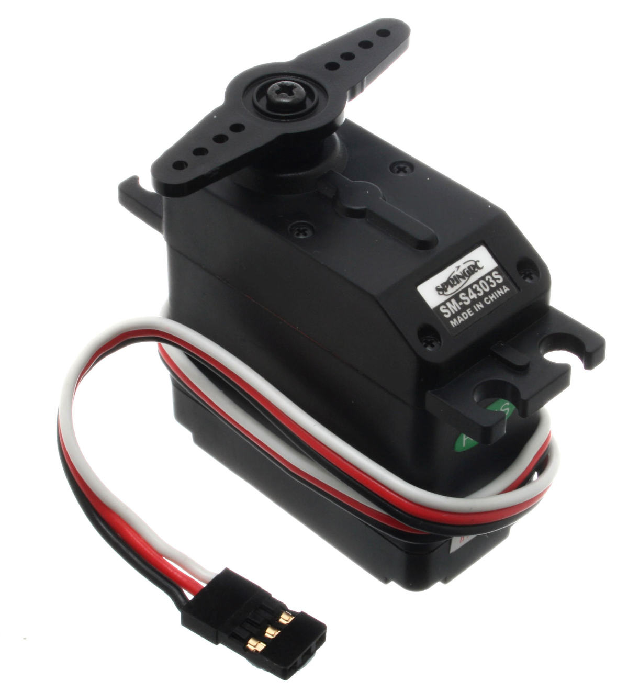
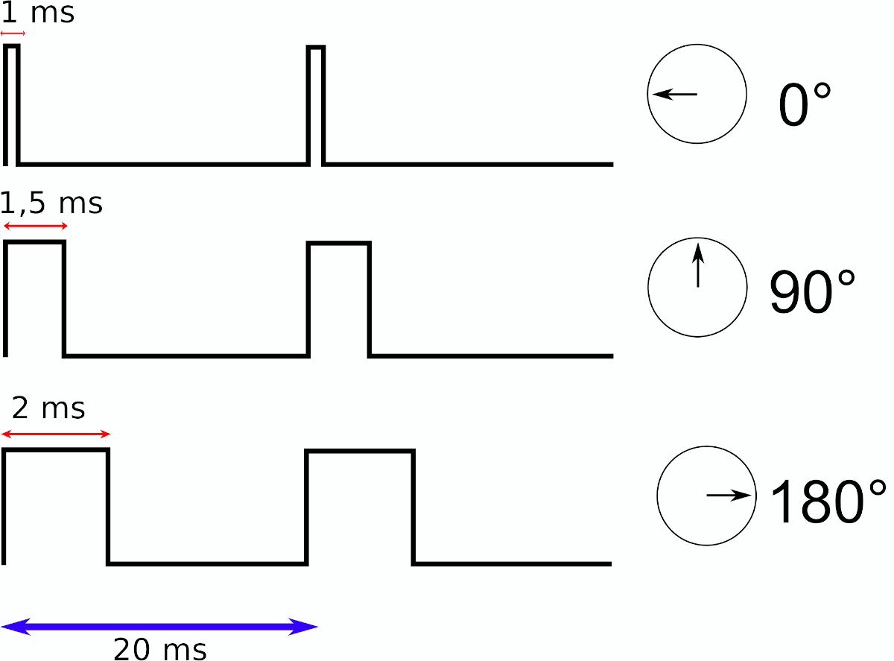

Raspberry Pi
Lerne die Programmierung eines Mikrocomputers kennen
Sven Krauß
Termine
- KW7 > 12.02.2026
- KW9 > 26.02.2026
- KW10 > 05.03.2026
- KW11 > 12.03.2026
- KW12 > 19.03.2026
- KW13 > 26.03.2026
Themenübersicht
- Was ist ein Raspberry Pi?
Einführung und den Raspberry Einrichten - Einführung in Python
print("Hallo Welt") - Arbeiten mit den GPIOs
LEDs und Taster - Sensoren einlesen
- Weitere Themen
- Raspberry Pi im Netzwerk
- Sonic Pi
- EMails automatisiert versenden
- Eure Vorschläge
Was ist der Raspberry Pi
- Komponenten des Pi
- Anschlüsse
- Umgang mit dem Pi - Was ist ESD?
- Betriebssystem
Hardware

Einige Anwendungen
- Desktop-Computer
- Internetradio
- Überwachungskamera / Webcam
- Robotersteuerung
- IoT / Hausautomation
- Web-Server
- Datenlogger
- Kiosk-Modus
- Retro-Spiele
- ...
Installation

Aufbau und Start
Aufgabe: Systemupdate
Unterschiede in den Programmiersprachen
Einteilung in zwei Gruppen!
- Compilierte Programmiersprachen
- Interpretierte Programmiersprachen
Compilierte Programmiersprachen

Interpretierte Programmiersprachen
Einführung in Python
print("Hallo Welt")
ida = 5
ida
paul = 42
paul
print("Ida ist", ida)
print("Paul ist", paul)
print("Zusammen sind sie", (paul + ida))
ida=paul
print("Zusammen sind sie", (paul + ida))
Entwicklungsumgebung
Demo
Quadrierer
zahl = input("Gib eine Zahl ein: ")
quadrat = zahl*zahl
print("Das Quadrat ist:", quadrat)
Datentypen
(Im Interpreter)
var = -5
type(var)
var = 5.0
type(var)
var = "Hallo Welt"
type(var)
var = "55"
type(var)
var = int(var)
type(var)
Verzweigungen
if [Bedingung]:
[Anweisung]
...
elif [Bedingung]:
[Anweisung]
...
else:
[Anweisung]
...
Bedingungen können sein:
- Kleiner: a < b
- Größer: a > b
- Kleiner gleich: a <= b
- Größer gleich: a >= b
- Gleich a == b
Syntax
if [Bedingung]:
[Anweisung1] #Innerhalb der Bedingung
[Anweisung2] #Innerhalb der Bedingung
...
[Anweisung3] #Gehört NICHT zur Bedingung
Ein zusammenhängender Code-Block wird anhand der Einrückung identifiziert.
Verzweigungen - Beispiel
alter = input("Wie alt bist du? ")
alter = int(alter)
if alter < 10:
print("Kind")
elif alter < 18:
print("Jugendlich")
else:
print("Erwachsen")
Aufgabe:
Erweitere das Beispiel so, dass auch "Rentner" ab eine Alter von 65 ausgegeben wird.
While-Schleifen
while Bedingung:
Anweisung
...
break
Zahlenraten
from random import randint
print("Rate eine Zahl zwischen 1 und 100")
zufallszahl = randint(1,100)
zahl = int(input("Dein Vorschlag: "))
while zahl != zufallszahl:
if zahl < zufallszahl:
print("Zu klein")
else:
print("Zu groß")
zahl = int(input("Dein Vorschlag: "))
print("Richtig!")
Aufgabe für die Profis:
Wie kann das Programm geändert werden, so dass die Abfrage int(input(...)) nur einmal programmiert werden muss
For-Schleifen
for X in I:
Anweisung
...
break
Beispiel Fakultät
f = 1
for i in range(1,10):
f = f * i
print("Fakultät von:", 9, "ist", f)
Funktionen
f = 1
for i in range(1,10):
f = f * i
print("Fakultät von:", 9, "ist", f)
f = 1
for i in range(1,18):
f = f * i
print("Fakultät von:", 17, "ist", f)
Funktionen (2)
def name(parameter, ...):
Anweisung
...
return Wert (optional)
Beispiel Fakultät
def faku(inp):
f = 1
for i in range(1, inp + 1):
f = f * i
print("Fakultät von:", inp, "ist", f)
faku(9)
faku(17)
Funktionen (3)
Rückgabewerte
def faku(inp):
f = 1
for i in range(1, inp + 1):
f = f * i
return f
x = faku(9)
print("Fakultät von:", 9, "ist", x)
print("Fakultät von:", 13, "ist", faku(13))
Aufgabe:
Schreibe eine Funktion, dass die Fibonacci-Folge erzeugt und anzeigt. Die Länge der Folge soll mit einem Funktions-Parameter geändert werden können.
Bibliotheken einbinden
- Die meisten Probleme in der Softwareentwicklung wurden schon von anderen bearbeitet.
- Teile der Problemlösung können in Bibliotheken bereitgestellt werden.
- Das Rad muss nicht neu erfunden werden.
import random
import math
zufallszahl = random.randint(1,100)
s = math.sin(0.5)
General Purpose Input/Output
GPIO Pins (Layout)
GPIO mit Python ansteuern
- Es gibt zwei verschiedene Modi für die Identifizierung
- Die BOARD-Methode verwendet die Nummern 1 bis 40 entsprechend dem Layout.
- Die BCM-Methode bezeichnet die Pins entsprechend ihres Interface-Kanals (channel).
- Einige GPIO-Anschlüsse können mehrere Funktionen übernehmen (SPI, I2C, USB...)
- Achtung: Ein GPIO-Ausgang darf mit maximale 16mA belastet werden.
- Alles GPIOs funktionieren mit 3.3V
GPIO mit Python ansteuern 2
- Die 'RPi'-Bibliothek erlaubt den Ansteuerung der GPIO-Anschlüsse
import RPi.GPIO as GPIO
GPIO.setmode(GPIO.BCM)
Aufbau mit Breadboard
Aufbau mit Breadboard
Aufbau mit Breadboard
Blinkende Leuchtdiode
- LEDs können nur mit einem Vorwiderstand an den GPIOs angeschlossen werden. In dem Fall 150 Ohm.
- Die Polarität muss beachtet werden. Der lange Anschluss kennzeichnet die Anode und muss mit der positiven Seite der Spannungsversorgung verbunden werden. Der kurze Anschluss ist die Kathode und gehört an die negative Seite (hier Ground GND).
Blinkende Leuchtdiode
Blinkende Leuchtdiode
import time
import RPi.GPIO as GPIO
led_pin = 18
GPIO.setmode(GPIO.BCM)
GPIO.setup(led_pin, GPIO.OUT)
try:
while True:
GPIO.output(led_pin, GPIO.HIGH)
time.sleep(0.5)
GPIO.output(led_pin, GPIO.LOW)
time.sleep(0.5)
except KeyboardInterrupt:
pass
GPIO.cleanup()
Taster abfragen
- Kann verwendet werden um den Zustand eines elektrischen Kontakts zu erfassen
- z.B. Lichtschranken, Türkontakte, Taster, etc...
- Pull-Up oder Pull-Down beachten (Klick)
- Die Pull-Up / Pull-Down Widersände sind in der CPU bereits eingebaut und können über die Bibliothek aktiviert werden.
Taster abfragen
Taster abfragen
Taster abfragen
import time
import RPi.GPIO as GPIO
tast_pin = 17
GPIO.setmode(GPIO.BCM)
GPIO.setup(tast_pin, GPIO.IN, pull_up_down = GPIO.PUD_UP)
try:
while True:
time.sleep(0.5)
if GPIO.input(tast_pin) == GPIO.HIGH:
print("Taster (nicht) gedrückt")
else:
print("Taster (nicht) gedrückt")
except KeyboardInterrupt:
pass
GPIO.cleanup()
Taster abfragen
Aufgabe: Ändere das Programm so ab, dass nur die Ereignisse "Taste gedrückt" und "Taste losgelassen" ausgegeben werden.
Taster abfragen
import time
import RPi.GPIO as GPIO
tast_pin = 17
GPIO.setmode(GPIO.BCM)
GPIO.setup(tast_pin, GPIO.IN, pull_up_down = GPIO.PUD_UP)
# Callback-Funktion
def ereignis(channel):
print("Taster gedrückt")
GPIO.add_event_detect(tast_pin, GPIO.FALLING,
callback = ereignis, bouncetime = 200)
try:
while True:
time.sleep(0.5)
except KeyboardInterrupt:
pass
GPIO.cleanup()
Felhermeldung
Neuere Raspberry Pi OS verwenden eine andere Schnittstelle für die event_detect Funktion. Hier hilft es eine andere Bibliothek zu verwenden.
sudo apt install python3-rpi-lgpio
Taster und LED kombinieren
Aufgabe: Ändere das Programm so ab, dass die LED genau 3x blinkt wenn der Taster gedrückt wird.
Raspberry Pi im Netzwerk
Netzwerkstruktur
- Ende-zu-Ende-Kommunikation
- Paketorientiert
- Datenkanal zwischen zwei Teilnehmern
Netzwerkstruktur
Client-Server-Architektur
Was sind IP Adressen
- Eindeutige Adresse in einem Netzwerk
- Zwei Arten von IP-Adressen: IPv4 und IPv6
- IPv4: X.X.X.X z.B. 10.2.22.55
- Man unterscheidet zwischen privaten und öffentlichen Adressen
ip a
Was sind Ports?
- Ein Port ist ein "Teil" einer Adresse und umfasst den Wertebereich 0 bis 65535
- Zuordnung von Diensten zu Port-Nummern.
- Client und Server "binden" sich an jeweils einen Port, wenn eine Verbindung aufgebaut wird.
- Ports 0 bis 1023: System Ports
- Ports 1024 bis 49151: Registered Ports
- Ports 49152 bis 65535: Dynamic Ports
Netcat
Server-Seite
netcat -l -p 50000
Client-Seite
netcat X.X.X.X 50000
Frage-Antwort-Spiel - Server
import sys
import socket
sock = socket.socket(socket.AF_INET, socket.SOCK_STREAM)
sock.bind(("", 51000))
sock.listen(1)
while True:
print("Warte auf deinen Spieler ")
spieler, addr = sock.accept()
print("Spieler hat sich verbunden. Seine Adresse ist ", addr)
try:
while True:
print("Warte auf Frage...")
frage = spieler.recv(256)
if frage:
print("Emfangen: " + frage.decode())
antwort = input("Tippe die Antwort ein und dann ENTER: ")
spieler.sendall(antwort.encode())
else:
print("EOF")
break
finally:
spieler.close()
Frage-Antwort-Spiel - Client
import sys
import socket
import time
spieler = socket.socket(socket.AF_INET, socket.SOCK_STREAM)
print("Verbinde zum Spieler ...")
spieler.connect(("10.2.15.154", 51000))
print("Verbunden")
try:
while True:
frage = input("Tippe deine Frage ein und dann ENTER: ")
spieler.sendall(frage.encode())
print("Warte auf die Antwort")
antwort = spieler.recv(256)
print("Antwort: " + antwort.decode())
finally:
print("Cleanup")
sock.close()
Aufgabe
(1) Schließe einen Taster am Rasperry PI an. Bei Betätigung des Tasters soll eine Nachricht an den Client gesendet werden.
(2) Schließe eine LED am Rasperry PI an. Bei Empfang der Nachricht "an" soll die LED angehen und bei Emfang der Nachricht "aus" entsprechend aus.
EMail und Co
Themen
- Aufbau von E-Mails
- MUA, MSA, MTA, MDA und MRA
- SMTP Protokoll
- EMail Client einrichten
- Python MUA
Aufbau einer E-Mail
Ganz viele MMMMM
Quelle: How does email work
Ganz viele MMMMM
| Abk. | Beschreibung |
|---|---|
| MUA | Mail User Agent. |
| MSA | Mail Submission Agent. |
| MTA | Mail Transfer Agent. |
| MDA | Mail Delivery Agent. |
| MRA | Mail Retrieval Agent. |
EMail Client einrichten
sudo apt update
sudo apt install geary
Starte Geary und richte dein Account ein.
Nachricht erstellen (sendmail.py)
from email.message import EmailMessage
def create_msg(from_addr, to_addr, inhalt):
msg = EmailMessage()
msg.set_content(inhalt)
msg['Subject'] = "Mein Betreff"
msg['From'] = from_addr
msg['To'] = to_addr
return msg
Versenden mit SMTP (sendmail.py)
import smtplib, ssl
def send_msg(from_addr, msg):
server = "w00962be.kasserver.com"
port = 465
# Login Passwort abfragen
prompt = "Login für {}: ".format(from_addr)
passwort = input(prompt)
# Sichere Verbindung aufbauen, einloggen und senden
ssl_ctx = ssl.create_default_context()
s = smtplib.SMTP_SSL(server, port, context=ssl_ctx)
s.login(from_addr, passwort)
s.send_message(msg)
s.quit()
Eigene Bibliothek verwenden
import sendmail
inhalt = "Langer langer text"
sender = "tn1@phaenovum.de"
empfänger = "tn2@phaenovum.de"
nachricht = sendmail.create_msg(sender, empfänger, inhalt)
sendmail.send_msg(sender, nachricht)
Aufgabe
(1) Erstelle ein Programm, mit einem Tastendruck eine E-Mail versendet.
(2) Binde den Abstandssensor ein und schicke eine Mail mit dem gemessenen Wert.
Sonic Pi
Installation im Terminal:
sudo apt install sonic-pi
Abschlussprojekt
Ziel: Wir bauen ein Sensor, der in einem Winkel von 180 Grad den kleinsten Abstand zum Sensor bestimmt.
Dazu befestigen wir auf einem Servomotor ein Ultraschallsensor. Damit kann der Ultraschallsensor um 180 Grad gedreht werden.
Es soll ein Programm geschrieben werden, dass die Umgebung abscannt und im Anschluss den Sensor auf das Ziel richtet.
Aufgaben / Funktionen
- Ansteuerung Servomotor
- Ansteuerung Ultraschallsensor
- Algorithmus zum scannen und positionieren
Bildet drei Gruppen, die jeweils ein Thema bearbeiten. Am Ende werden wir alles auf einem Raspberry Pi zusammenfügen.
Grobstruktur / Zusammenarbeit
def setze_position(winkel):
print("Neuer Winkel: ", winkel)
def messe_abstand():
return 0.0
def ermittle_winkel():
return -1
def programm():
winkel = ermittle_winkel()
if winkel >= 0:
print("Kleinster Abstand gefunden bei:", winkel)
setze_position(winkel)
else:
print("Nichts gefunden")
programm()
(Modellbau-)Servos ansteuern

